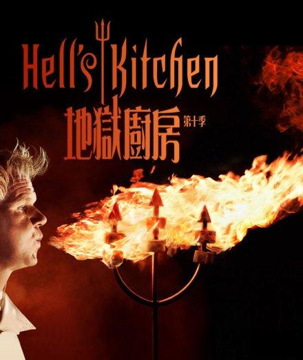
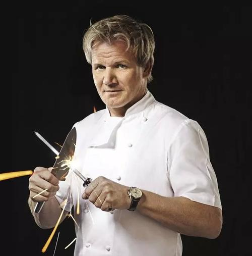
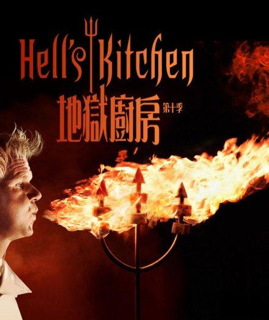
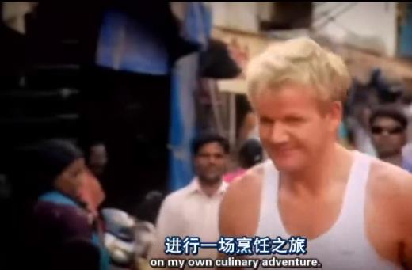

|  | |
 |
 |
欢迎各位小伙伴来到 Gordon Ramsay 白嫖路人粉的小站！ 世界那么大，一枚资深的吃货怎么可以只关注中国的美食呢？这里带你了解Gordon Ramsay的（不完全）美食烹饪类节目（因为作者比较懒，只想介绍自己喜欢看的几个），学习异域文化，感兴趣的话就往下看吧 ~o~ |
扒一扒Gordon Ramsay：
Gordon James Ramsay，江湖人称狗蛋·拉姆齐，苏格兰人，1966年11月8日出生于格拉斯哥的一个工人家庭，在莎士比亚的老家 Stratford-upon-Avon 长大。家庭不幸，父亲死于酗酒，弟弟吸毒。Gordon Ramsay曾是一名足球运动员，因受伤不得不退役，不过美食界却因此多了一名天才大厨。
凭借天分与不屈的努力，Gordon成长为了一名独当一面的大厨。2001年，他就拥有了自己的第一家米其林三星餐厅。入厨25年来，他旗下的产业共获得了14颗米其林星。1998年，他开始了电视主持生涯，凭借自己的人格魅力和特色，他的烹饪节目风靡欧美。如今，他拥有28间餐厅，著有烹饪书籍数十部。作为chef和商人，Gordon都是非常成功的，他也许不是拥有米其林星最多的大厨，但是他一定是全球最知名的。
Gordon Ramsay的烹饪节目：
The F Word
Ramsay's Best Restaurant
Ramsay's Kitchen Nightmares
Hotel Hell
Gordon Behind Bars
除了这些，Gordon还有许许多多的美食教程（学习需谨慎）：
Home Page |
Master Chef |
Hell's Kitchen |
Ramsay's Great Escape |